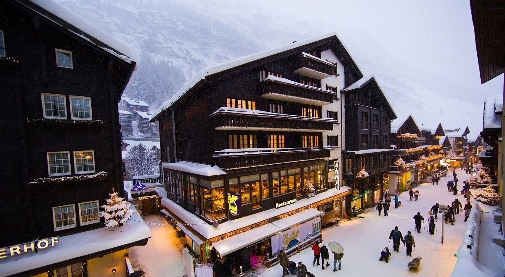

Несколько вдохновляющих цитат:
Куда поехать в Новый Год?
Зёлль, Австрия
Живописная долина возле горного массива Хоэ Зальве включает девять курортов; среди них — уютная деревня Зёлль с горными хижинами и радушными хозяевами, в гостях у которых легко почувствовать себя как дома. В целом курорт идеально подходит для расслабленного катания и семейного отдыха — здесь очень много простых, но длинных трасс, работают школы для взрослых и детский горнолыжный клуб. Для активной молодёжи построен фан-парк и халф-пайп, а также ярко освещённые ночные трассы. В солнечные дни, которых достаточно много, 160 км спусков обслуживаются снежными пушками.
Церматт, Швейцария

Горнолыжная зона для катания объединена в один курорт с соседним итальянским Breuil-Cervinia. В общей сложности на большом курорте работает более 50 подъёмников, построено около 360 километров трасс. Больше всего из них — красных, примерно 230 километров. Для тех, кто любит заниматься фрирайдом, на курорте выделена специальная зона, и лыжные спуски в ней занимают около 40 километров. В «Церматте» работает одна из самых высоких в Европе канатных дорог. Она соединяет две горные вершины на отметках 2939 и 3883 метров.
Роза-Хутор, Россия
Горнолыжная зона комплекса предлагает для катания 102 км трасс различной сложности — от зелёных до чёрных. Перепад высот составляет 1534 м. На курорте работает 28 подъёмников, обеспечивающих пропускную способность в десятки тысяч человек в день. Действующая система искусственного оснежения трасс является крупнейшей в Европе. С помощью системы искусственного оснежения обеспечивается продолжительность лыжного сезона до 180 дней в год, в зависимости от высоты пролегания трасс. Средняя скорость основных подъёмников — не менее 6 м/сек. Спортивные горнолыжные трассы расположены на северных склонах хребта Аибга.
Шварцвальдт, Германия
Шварцвальд, что с немецкого переводится как «Черный лес», – обширный горный регион, протянувшийся вдоль верхнего течения Рейна на 150 км. Ширина Шварцвальда достигает 30-50 км, а общая площадь 6 тыс. км². Среди туристов он популярен своими девственными лесами, прекрасными горами, хрустально-чистыми водоёмами. Здесь расположено несколько климатических и горнолыжных курортов, наиболее популярным из которых является Фельдберг. На этой горе, имеющей высоту полтора километра, каждую зиму прокладываются скоростные спуски с уклоном до 400 метров, и предназначающиеся для спортсменов разного уровня подготовки.